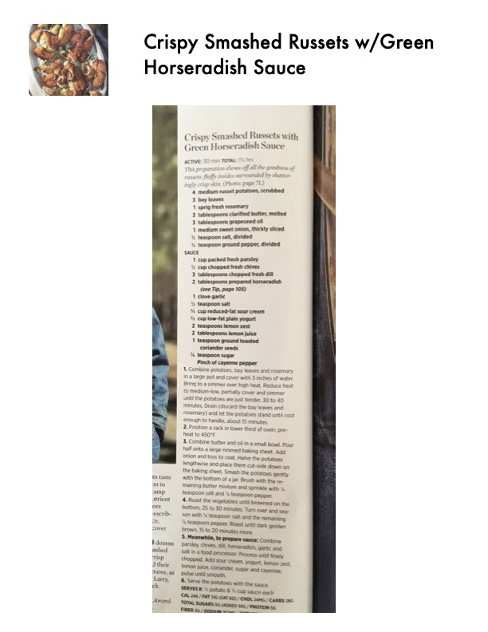

Crispy Smashed Russets with Green Horseradish Sauce

Original cookbook page 36
This preparation shows off all the goodness of russets: fluffy insides surrounded by shatteringly crisp skin, served with a fresh green horseradish sauce.
Prep: 30 minutes active • Cook: 1 hour • Total: 1½ hours
Ingredients
- 4 medium russet potatoes, scrubbed
- 2 bay leaves
- 1 sprig fresh rosemary
- 3 tablespoons clarified butter, melted
- 3 tablespoons grapeseed oil
- 1 medium sweet onion, thickly sliced
- 1 teaspoon salt, divided
- 1 teaspoon ground pepper, divided
- 1 cup packed fresh parsley
- ½ cup chopped fresh chives
- 3 tablespoons chopped fresh dill
- 2 tablespoons prepared horseradish
- 1 clove garlic
- ½ cup reduced-fat sour cream
- ½ cup low-fat plain yogurt
- 2 teaspoons lemon zest
- 2 tablespoons lemon juice
- 1 teaspoon ground toasted coriander seeds
- ½ teaspoon sugar
- Pinch of cayenne pepper
Instructions
- Combine potatoes, bay leaves and rosemary in a large pot and cover with 3 inches of water. Bring to a simmer over high heat. Reduce heat to medium-low, partially cover and simmer until the potatoes are just tender, 30 to 40 minutes. Drain and let stand until cool enough to handle, about 15 minutes.
- Position a rack in lower third of oven; preheat to 450°F.
- Combine butter and oil in a small bowl. Pour half onto a large rimmed baking sheet. Add onion and toss to coat. Halve the potatoes lengthwise and place them cut-side down. Smash gently with bottom of jar. Brush with remaining butter mixture and sprinkle with ½ tsp salt and ½ tsp pepper.
- Roast until browned on the bottom, 25 to 30 minutes. Turn over and season with remaining salt and pepper. Roast until dark golden brown, 15 to 20 minutes more.
- For sauce: Combine parsley, chives, dill, horseradish, garlic and ½ tsp salt in food processor. Process until finely chopped. Add sour cream, yogurt, lemon zest, lemon juice, coriander, sugar and cayenne; pulse until smooth.
- Serve the potatoes with the sauce.
Recipe #36 from collection